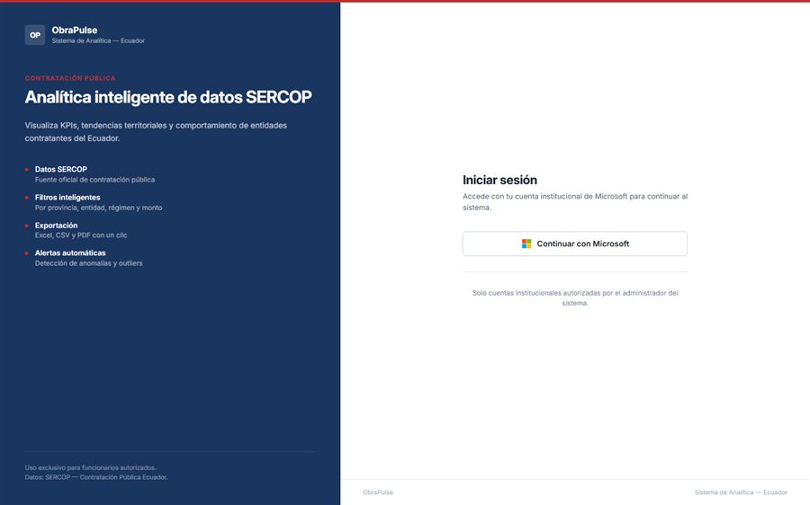
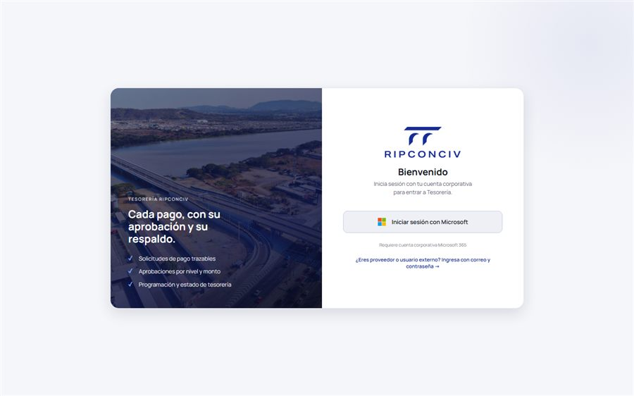
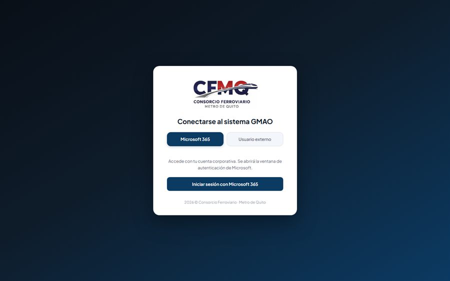

Internal systems I build for RIPCONCIV, a construction company in Ecuador.
Lunch Management System
Built entirely with plain HTML, CSS and JavaScript: no frameworks,
no libraries. It registers daily lunch orders and serves three
separate interfaces for kitchen staff, supervisors and
administrators, each with its own permissions, replacing the
monthly spreadsheet used for payroll deductions.
HTML · CSS · JavaScript · SQL
A CMMS that replaced informal WhatsApp reporting with traceable work
orders. Technicians open tickets with mandatory photo evidence, follow a
guided flow (assign → start → execute → close with signature) and the
system generates a PDF report on closing. Includes a yearly preventive
maintenance matrix with compliance percentage per discipline, plus
role-based access for six different user types.
React · NestJS · Prisma · SQL Server · Azure

A portal that extracts and tracks public-works contracts from
Ecuador's public procurement system, so the company can spot tenders
worth bidding on without checking the official portal by hand. It
handles thousands of rows with virtualised tables, charts the
results, and exports to Excel and PDF.
React 19 · Python · Docker(Container Registry Azure) · MSAL

Treasury Platform
A payment-flow platform that replaces a manual spreadsheet process.
I analysed the existing Excel workflow to model the database and
documented the data required from the company's ERP. Corporate
Microsoft 365 sign-in is already live.
React · NestJS · SQL Server · MSAL

An internal content hub that turned scattered network folders into a
searchable library of drone footage, corporate video and brand assets.
Brand folders are created from the UI and mapped to real cloud storage
folders, and files following a naming convention are filtered
automatically by format, background and color.
React · Vite · Azure Blob Storage · Entra ID
Cloud Backup Manager
A Windows desktop app that automates cloud-to-cloud and
local-to-cloud backups. It runs a background worker, retries
transient failures, resumes interrupted uploads instead of starting
over, and installs itself to run on startup. Packaged as a
standalone executable.
Python · PyInstaller · Windows Task Scheduler
A maintenance management system for the Quito Metro, built from a
Figma design and a PostgreSQL data model. It covers assets,
locations, work orders, phone-reported incidents, document
management and a full audit trail, with end-to-end automated tests.
React · PostgreSQL · Azure · Playwright

Hover over a card to see the application, or click its title to open the
live system in a new tab. The ones without a link are internal tools with
no public address.